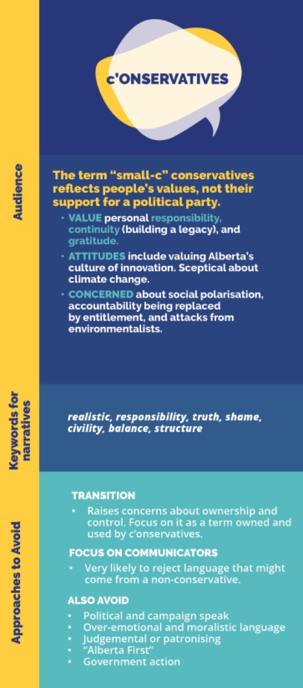
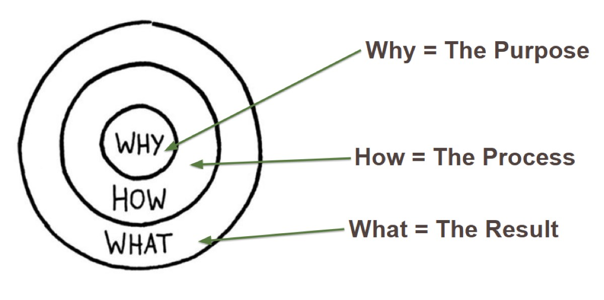

Découvrez comment les liens émotionnels et des visuels efficaces rendent la communication scientifique marquante
La discipline scientifique s'attache à présenter des faits et des données. Pourtant, la communication efficace de cette science va au-delà du simple partage d'information. Chez Fuse Consulting Ltd., nous comblons l'écart entre le savoir scientifique et la compréhension du public. Ce billet explore comment les liens émotionnels et les éléments visuels peuvent renforcer considérablement l'impact de vos messages scientifiques.
Les trois organes de la communication de masse

La tête : le domaine des faits, des données et des arguments logiques
Le cœur : le lien émotionnel qui rend l'information proche des gens
Les tripes : la réaction viscérale et instinctive qui rend les messages mémorables
Alors que la communication scientifique traditionnelle se concentre souvent uniquement sur la « tête », mobiliser les trois « organes » peut mener à une communication plus efficace et plus marquante.
Exploiter le pouvoir de l'émotion
L'engagement émotionnel ne signifie pas compromettre l'intégrité scientifique. Il s'agit plutôt de :
Faire le lien avec l'expérience personnelle : relier les concepts scientifiques à la vie quotidienne
Souligner la pertinence : montrer comment l'information touche la vie des gens ou leurs communautés
Recourir aux techniques narratives : inscrire l'information dans des récits captivants
Le rôle des visuels en communication scientifique
Les éléments visuels peuvent combler l'écart entre des données complexes et la compréhension du public :
Infographies : simplifier des données complexes en formats visuels faciles à assimiler
Cartes de processus : illustrer des procédures ou des systèmes complexes
Notes d'information visuelles : combiner texte et graphiques pour des résumés plus engageants
Étude de cas : communiquer sur les changements climatiques
L'Alberta Climate Narratives Project a montré comment une communication émotionnelle et visuelle peut améliorer la compréhension d'enjeux scientifiques complexes :
Des techniques de narration ont rendu les données climatiques proches des gens
Des visuels ont illustré les répercussions locales possibles
Les messages ont été adaptés aux valeurs des différents segments du public
Conseils pratiques pour intégrer l'émotion et les visuels

Commencer par le « pourquoi » : ouvrez votre communication en expliquant pourquoi l'information compte, le « Et alors ? »
Utiliser des analogies : reliez les concepts complexes à des idées familières
Intégrer des graphiques porteurs de sens : ne vous contentez pas de décorer. Utilisez des visuels qui ajoutent du sens et améliorent la compréhension, comme des graphiques explicatifs.
Pratiquer l'écoute active : soyez attentif aux réactions émotionnelles de votre public et ajustez-vous en conséquence.
Conclusion : une approche globale de la communication scientifique
En intégrant les liens émotionnels et des visuels efficaces à votre stratégie de communication scientifique, vous pouvez créer des messages qui informent, mais qui inspirent et motivent aussi. Cette approche aide à combler l'écart entre le savoir scientifique et l'engagement du public, en favorisant une société plus engagée et dotée d'une meilleure culture scientifique.
Dans notre prochain billet, nous explorerons un autre aspect essentiel d'une communication scientifique efficace : comprendre et segmenter votre public. Restez à l'affût pour découvrir comment adapter votre approche peut maximiser l'impact de vos messages scientifiques.
À propos de Fuse :
Fuse Consulting Ltd. se consacre à combler l'écart entre les concepts scientifiques complexes et leur compréhension pratique. Nous rendons la science accessible, engageante et utilisable pour des publics variés.
Notre équipe d'experts transforme des recherches complexes en récits visuels captivants et en connaissances pratiques. Nous travaillons dans divers secteurs, en favorisant la collaboration entre chercheurs, praticiens et groupes communautaires.
Chez Fuse, nous nous engageons à renforcer la culture scientifique et à favoriser une prise de décision éclairée dans la société. Grâce à des stratégies de communication novatrices, nous créons des contenus engageants qui informent et inspirent, que ce soit dans les espaces publics, les institutions ou les programmes de vulgarisation.
Nous croyons que la science, lorsqu'elle est communiquée efficacement, a le pouvoir de façonner un avenir meilleur pour tous.
Pour en savoir plus sur notre approche et notre équipe de professionnels dévoués, consultez :
Pour savoir comment Fuse peut répondre à vos besoins, n'hésitez pas à nous joindre.